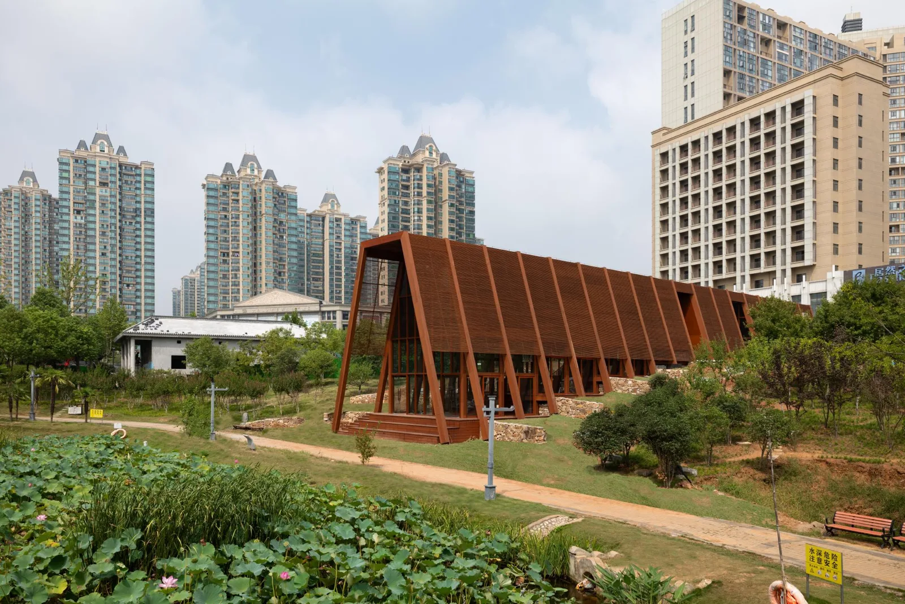
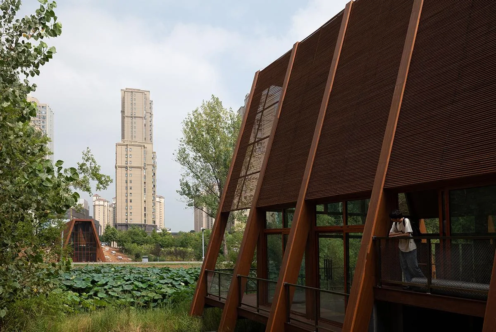
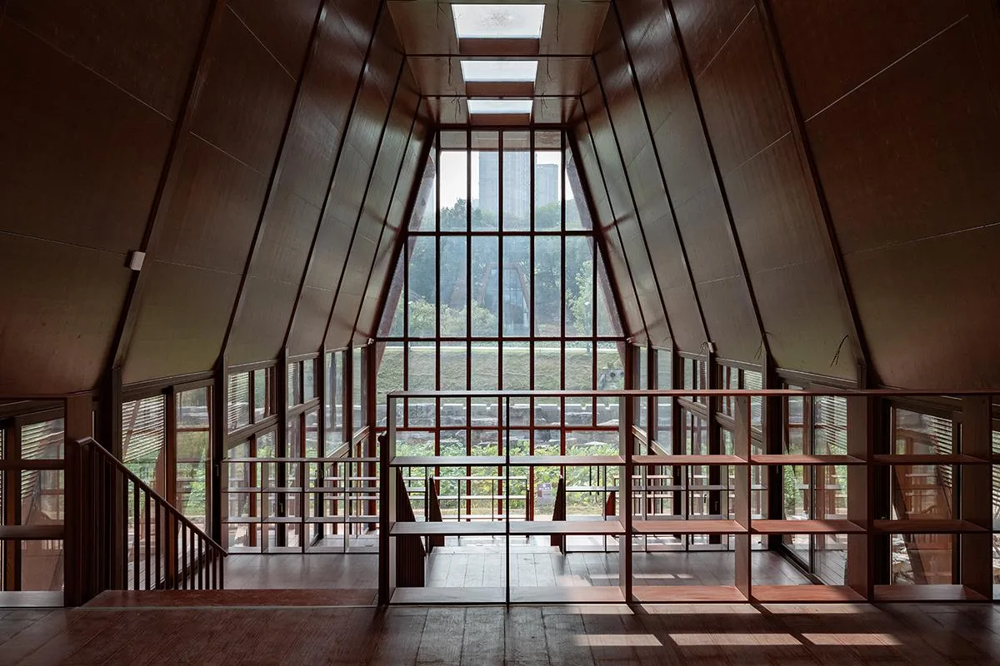
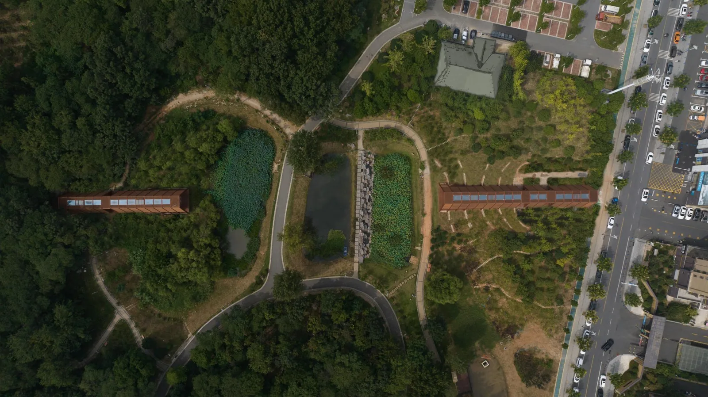
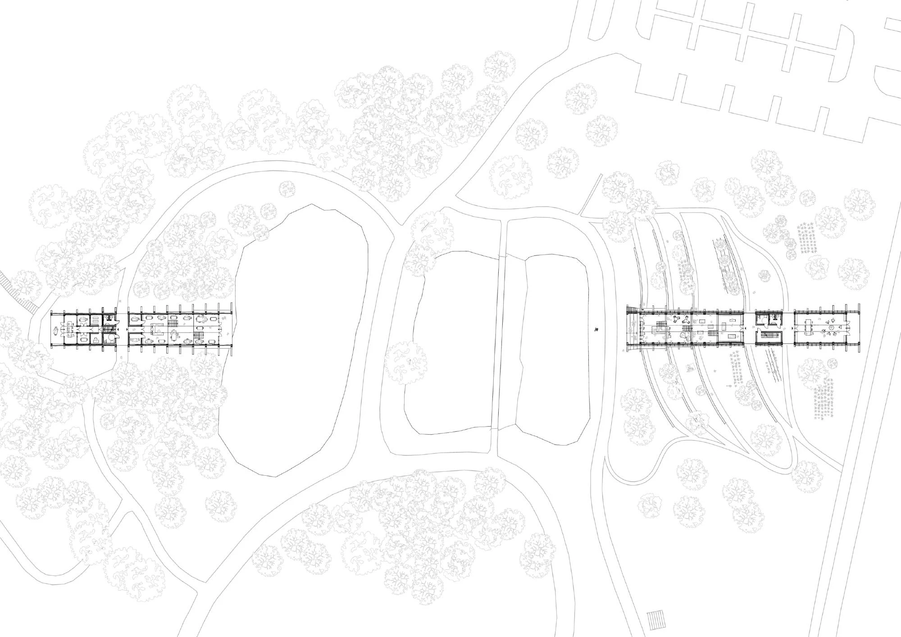
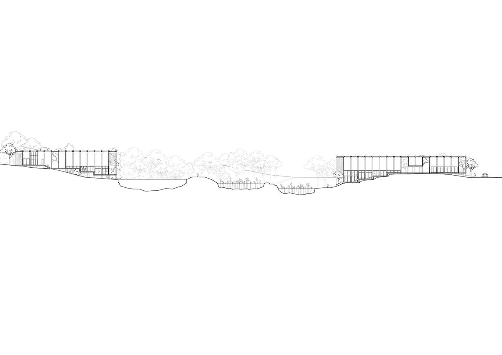
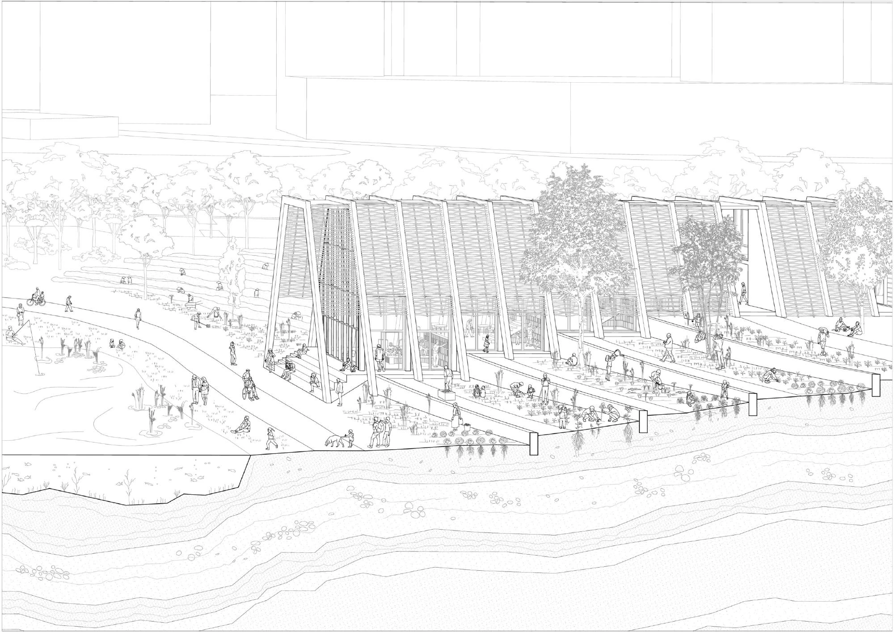
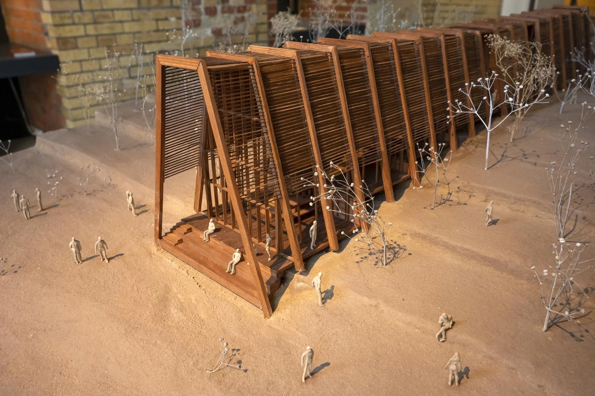

Library and community buildings · 2025
House of Knowledge
Christoph Hesse Architects
Xinyang, China
The project combines reading and learning with exhibitions, workshops and community activities. A separate tea house adds informal meeting space, linking focused study with public exchange across a shared park landscape.
The architects connect social and ecological life through two buildings and their landscape rather than one enclosed institution. Multiple paths, generous openings, shading and cross ventilation extend use into the park, where ponds and planned community gardens become part of the learning environment.


Relevant connections
Images and drawings / 08













